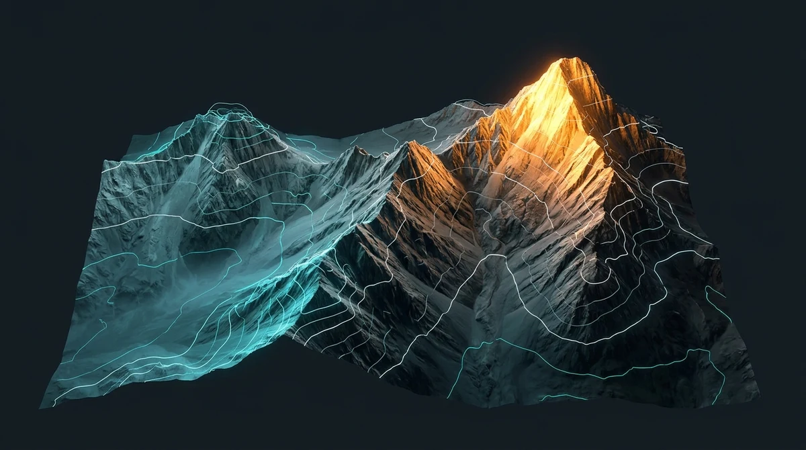
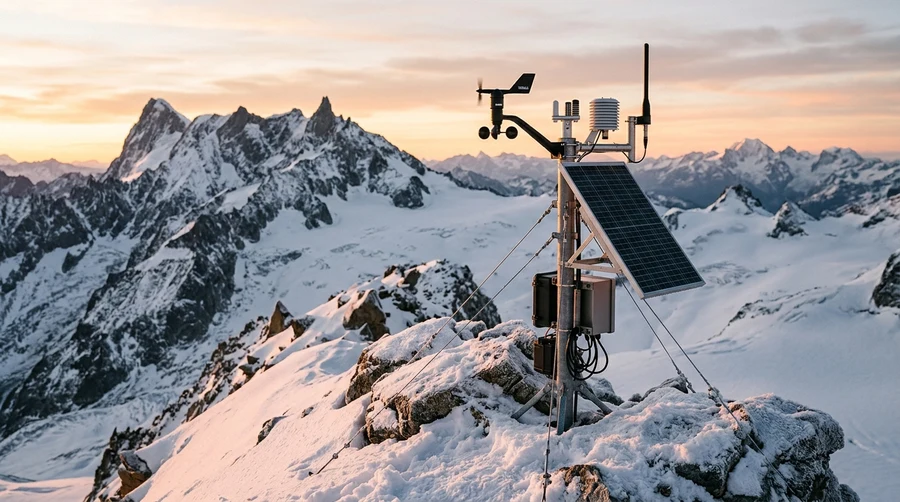

4000m
3500m
3000m
2500m
High-altitude topographic isolines & boreal forest sensor stream


Measures solar albedo, permafrost core temperature, and snow-crust shear across the sunlit eastern couloir.
Tracks basal meltwater discharge rates and sub-surface ice fissure resonance with millisecond telemetry.
Monitors net ecosystem CO2 exchange, stomatal conductance, and winter snow interception in old-growth spruce.
Drag the elevation slider to compute adiabatic lapse temperature, barometric pressure, and snowpack water equivalent across the massif.
Connected to Sentinel-Alpine relay node at 4,120m ASL. Topographic isoline packets and canopy CO2 flux metrics are synchronized.